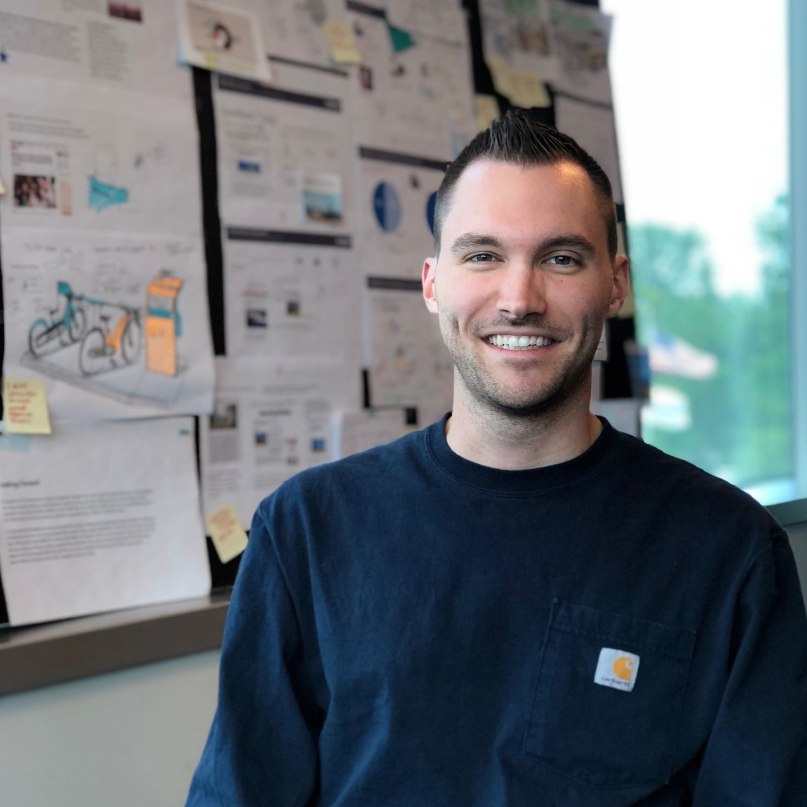

I love figuring out how people operate with the things around them. Specifically, I like seeing how people interact with technology, products, services, and even other people. I’m interested in exploring what those experiences look like and how they can be improved, hence why I call myself a User Experience Designer.
My time at the University of Michigan School of Information has allowed to me refine my skills in UX design. I also have a curiosity for human language and cognition, which has been carried out through my Linguistics Minor. I have been able to infuse my knowledge of how the mind works into a lot of the UX work I’ve done in my School of Information courses. UMSI gave me practical experience with tools and methods that are popular in the industry. This has given me the opportunity to design, build, and evaluate compelling interactive systems. I believe in the philosophy of user-centered design - that is, designers of computing systems need to take account of and even prioritize the needs and experiences of the system’s users. If not designing for the end user of a product or service, who else would we design for?
Here are a few of my skills:
Apart from my technical skills, something that I take pride in is my ability to notice and manage group dynamics. My work as a Residential Staff Coordinator and RA for University of Michigan Housing has given me a ton of experience dealing with a very wide range of group dynamics situations. Over my three years in Housing, I’ve dealt with everything from noticing and mediating minor staff conflict, to communicating staff needs to department administrators to bring about positive departmental change. I have been very passionate about the work I’ve done in UM Housing and could go on forever about it.
I have also been working at the University of Michigan Transportation Research Institute (UMTRI) since September 2017. Automotive has always been a hobby and huge passion of mine. I believe we are on the cusp of revolutionary change in the automotive industry and I’m very excited to see what vehicles will look like 10 years (or less) in the future. Being at UMTRI has given me the opportunity to be a part of the cutting-edge research that will shape the future for vehicles. You can read more about my work at UMTRI by looking in my portfolio, or by clicking here.